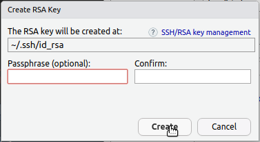
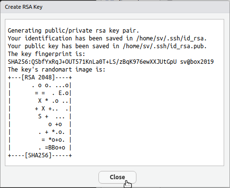
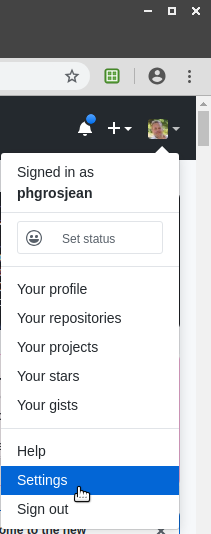

A.2 Configuration Git et Github
A chaque nouvelle installation de la SciViews Box, vous devez la reconfigurer via la boite de dialogue SciViews Box Configuration. En particulier, il est très important d’indiquer correctement votre identifiant et email Git (zone encadrée en rouge dans la copie d’écran ci-dessous).

Assurez-vous (si ce n’est déjà fait) que vous possédez un compte Github valide. Vous pouvez cliquer sur le bouton Go to Github par facilté dans la même boite de dialogue. Choisissez de manière judicieuse votre login. Vous pourriez être amenés à l’utiliser bien plus longtemps que vous ne le pensez, y compris plus tard dans votre carrière. Donc, lisez les conseils ci-dessous (inspirés et adaptés de Happy Git and Github for the UseR - Register a Github Account :
Incluez votre nom réel. Les gens aiment savoir à qui ils ont affaire. Rendez aussi votre nom/login facile à deviner et à retenir. Philippe Grosjean a comme login
phgrosjean, par exemple.Vous pouvez réutiliser votre login d’autres contextes, par exemple Twitter ou Slack (ou Facebook).
Choisissez un login que vous pourrez échanger de manière confortable avec votre futur boss.
Un login plus court est préférable.
Soyez unique dans votre login, mais à l’aide d’aussi peu de caractères que possible. Github propose parfois des logins en auto-complétion. Examinez ce qu’il propose.
Rendez votre login invariable dans le temps. Par exemple, n’utilisez pas un login lié à votre université (numéro de matricule, ou nom de l’université inclue dans le login). Si tout va bien votre login vous suivra dans votre carrière, … donc, potentiellement loin de l’université où vous avez fait vos études.
N’utilisez pas de logins qui sont aussi des mots ayant une signification particulière en programmation, par exemple, n’utilisez pas
NA, même si c’est vos initiales !
Une fois votre compte Github créé, et votre login/email pour votre identification Git correctement enregistrés dans la SciViews Box, vous devez pouvoir travailler, faire des “pushs”, des “pulls” et des “commits”16. Cependant, RStudio vous demandera constamment vos logins et mots de passe… à la longue, c’est lassant ! La procédure ci-dessous vous enregistre une fois pour toutes sur votre compte Github dans RStudio.
A.2.1 Compte Github dans RStudio
RStudio offre la possibilité d’enregistrer une clé publique/privée dans votre SciViews Box afin de vous enregistrer sur Github de manière permanente. L’avantage, c’est que vous ne devrez plus constamment entrer votre login et mot de passe à chaque opération sur Github ! Nous vous le conseillons donc vivement.
- Entrez dans Rstudio Server, et allez dans le menu
Tools -> Global Options.... Ensuite, cliquez dans la rubriqueGit/SVNdans la boite de dialogue.

- Ensuite, cliquez sur le bouton
Create RSA key.... La phrase de passe n’est pas nécessaire (il est même préférable de la laisser vide si vous voulez utiliser Github sans rien devoir taper à chaque fois). Cliquez sur le boutonCreate.

- Vous obtenez alors une fenêtre similaire à celle ci-dessous (bien sûr avec des données différentes). Ceci confirme que votre clé cryptographique a été créée localement. Fermez cette fenêtre pour revenir à la boite de dialogue de configuration de RStudio Server.

- Dans la boite de dialogue de configuration de RStudio Server, section
Git/SVNcliquez sur le lienView public keyqui apparait une fois la clé créée :

- La clé apparait dans une fenêtre, déjà présélectionnée. Copiez-là dans le presse-papier (
Ctrl-Cou clic bouton droit et sélection deCopydans le menu contextuel), puis fermez cette fenêtre.

- Dans votre navigateur web favori, naviguez vers https://github.com, loggez-vous, et accédez aux paramètres de votre compte Github (menu déroulant en haut à droite, entrée
Settings) :

- Dans les paramètres de votre compte, cliquez sur la rubrique
SSH and GPG keys, ensuite sur le bouton vertNew SSH key

- Collez-y votre clé à partir du presse-papier dans la zone
Key. Vous pouvez lui donner un nom évocateur dans le champTitle. Ensuite, cliquez surAdd SSH key.

- Déloggez, puis reloggez-vous dans RStudio Server pour que les changements soient pris en compte. La prochaine action sur Github depuis RStudio pourrait encore déclencher la demande de votre login et mot de passe, mais ensuite, les opérations devraient se faire directement.
Si vous éprouvez toujours des difficultés à faire collaborer R et RStudio avec Git et Github, voyez https://happygitwithr.com (en anglais) qui explique les différentes procédures bien plus en détails.
Vérifiez toujours lors de votre premier commit que Github vous reconnait bien. Pour cela, naviguez vers le dépôt où vous avez commité avec votre explorateur web, et vérifiez l’identité prise en compte lors de votre commit.↩